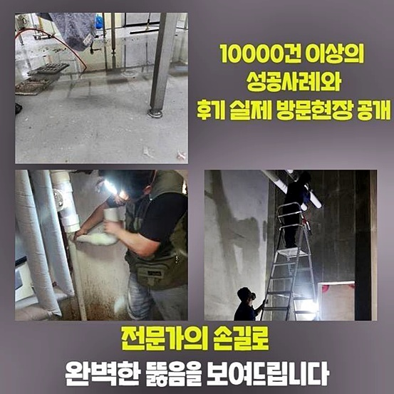
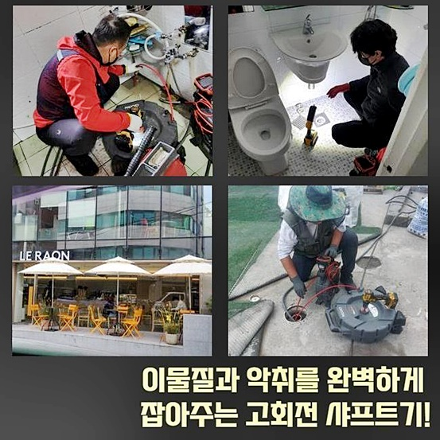
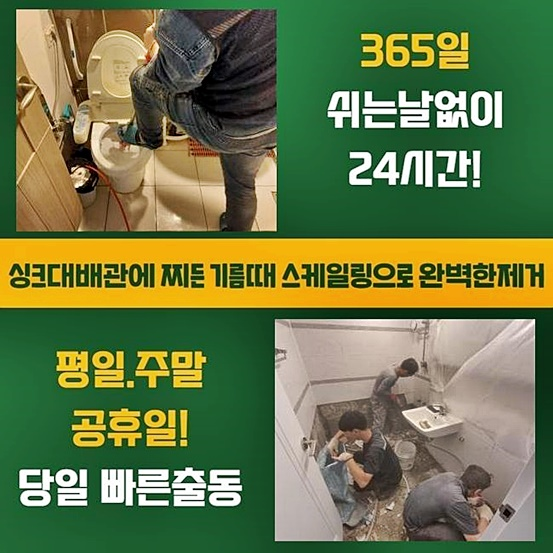
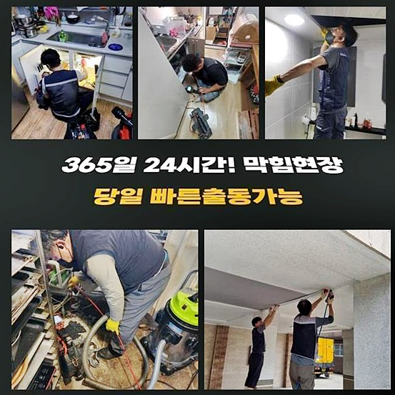
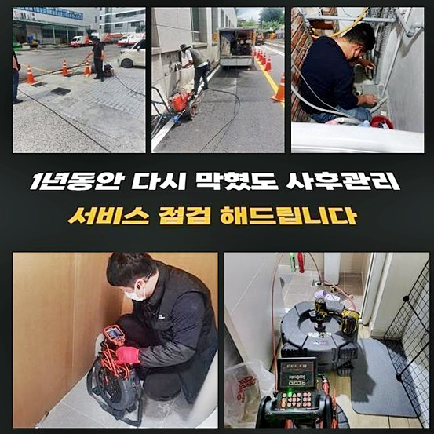
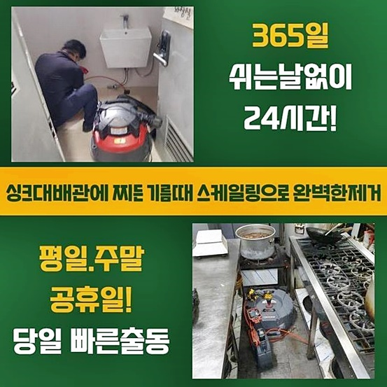

🏠 종로 교북동씽크대배수구역류 신문로2가 배관내시경카메라 배관뚫는업체
용인 싱크대막힘 전문 시공 후기

📋 작업 개요
- 위치: 용인
- 서비스 유형: 싱크대막힘, 하수구막힘, 배관막힘, 역류해결, 뚫는업체, 배관청소, 고압세척
- 작업 일시: 2024. 8. 22. 20:50
- 업체명: 하수구수사대 (010-5615-2118)
🔍 문제 상황
종로 교북동씽크대배수구역류 신문로2가 배관내시경카메라 배관뚫는업체
막힘 현상이 발생하는 증상들과 수준은 건물의 설계나 기능에 따라 달라질 수 있습니다
어쩔 수 없이 주택보다는 식당 카페 등 상업 빌딩에서 장애 증상들이 심각한 경우가 많죠
물론 빌딩의 완공 시점이나 배관 클리닝을 해온 방식에 따라 상이함은 생기기 때문에 모두 같다고 말하기는 힘들어요
그래서 많은 세대에서 일제히 막힘현상이 나타났거나 빈번히 현상이 나타날때는 꼭 배관 전문가를 이용해 근원을 점검하고 막힘상황을 해소해야 하죠
오늘 살펴볼 저희의 베테랑이 다녀온 곳도 상가 빌딩에서 발생한 현상이었어요
아는 사람을 통해서 저희 전문가를 소개 받았다는데 툭하면 막힘 문제가 나타나니 프로페셔널하게 처리할 수 있는 수리업체를 수소문하고 있있었다고 하셨습니다
기사님이 방문해서 문제 현장을 둘러본 결과 건물 안에 입주된 여러 호실에서 일제히 배관들이 막히는 상황이 일어났어요
상가건물이기 때문에 영업중인 가게에서 배수가 안되거나 물이 솟구치는 역류문제가 시작된 상태였습니다
그러나 이런 배수관 막힘은 뜬금없이 나타나는게 아니라는 점이 걱정이 되었습니다

🔎 원인 분석
💡 전문가 진단: 정밀 진단 장비를 사용하여 슬러지의 고착 여부를 판명하고 타격/세척 작업을 실시했습니다.
일단 나타나면 상태도 심각하고 화장실 내의 막힘도 심각하므로 뚫으려면 확실한 해결안을 강구해야하는 상황이었습니다
의뢰인께서 다양한 사례를 사전에 확인해보셨는지 배수관로막힘을 해결하는 저희업체에 하수관 고압세정작업을 실행하면 안되냐고 물어보셨습니다
고압수 세척장비는 일시적으로 강력한 압력을 가해 충분한 물을 배수파이프로 주입하여 하수관로 내부에 있는 뭉친 찌꺼기들을 빼낼 수 있는 기구입니다
따라서 문제현상에 적절히 활용하면 짧은 시간안에 막힌상태를 처리할 수 있는 것은 맞아요
그러나 어디에서나 고압세척기기를 적용할 수 있는 것은 아니라는 사실들을 명심해 주셔야 합니다
고압세정기는 압력을 끌어올릴 수 있는 동력기계와 연결해야 해서 작업조건으로 적절치 않은 곳에선 이용하기 어렵습니다
뿐만 아니라 아파트와 연립등의 거주지에서는 하수관로 고압수 세척보다는 불순물을 흡수시키는 석션기구 사용이나 플렉스샤프트기계를 이용한 분쇄작업과 클리닝 방안들이 효율이 좋습니다
하지만 문제의 상가빌딩은 긴 기간동안 막힘문제가 여러차례 생겼났지만 적절한 관리들을 해오지 않아서 막힘 장애가 심각하였습니다
배수관로 안쪽에 슬러지덩어리가 대량으로 축적되면 이 부분을 뚫는 과정도 쉽지 않지만 배수구에 큰 손상이 나타날 수 있다는 사실이 더 큰 걱정이었습니다
식당 또는 오일을 사용해 요리하는 매장에서 버려지는 슬러지 덩어리와 기름기들은 오래동안 배수관로 내에서 덩어리지면 그 지름이나 중량이 증가하는 사례가 흔해요
그래서 기름뭉치들이 계속해서 축적될수록 배수배관들이 무거워져 연결구간이 약해지거나 가라앉는 증상들이 일어날 수 있어요

🔧 작업 과정
첫번째로 배수파이프의 모습을 세심하게 살펴보고 고압수 클리닝이 시행될수 있는지 살펴본 후에 하수배관 클리닝을 진행했습니다
연결지점을 면밀히 점검하니 배수관로가 점차 처지는 현상도 있었지만 해당현상은 불순물을 없애준다면 원상복귀될 것으로 판단하여 느슨해진 부근만 스틸스트랩으로 고정해두었어요
이처럼 사전에 준비 작업들을 실시하지 않고 고압수를 적용한다면 배수관로 깨짐이 일어날 수 있어 더 심각한 문제가 나타날 수 있어요
고정시키는 일을 완료한 후 이젠 심도있는 세척작업을 착수하기 위해 하수파이프 내시경장비를 투입할 준비를 마쳤습니다
공용파이프가 상당한 길이로 연결된 상태라서 배수구전용 카메라로 배수구 속안을 확인하는 시간도 오래 소모할 수 밖에 없었죠
하지만 배수관수리에서 핵심이 되는 과정은 확실한 분석을 통해 문제요인을 밝혀내는 것이기 때문에 내시경 검사를 게을리해서는 안돼요
고압수 세척을 청결하게 하기 위해 하수도 내시경카메라를 배관 깊은 내부까지 들여보내 메인 배관을 철저하게 확인했습니다
배수구 내부 유지관리가 적절하게 이루어지지 않아서 깊은 내부까지 기름덩어리가 가득한 상태를 발견할 수 있었어요
하수관로를 뚫는 저희 팀은 이런상황이라면 고압세척기를 적용해서 정비를 하는게 필요하다는 결정을 하였습니다
이런 상업용건물 지하시설에 배치된 공동배관은 길이가 상당한 경우가 대다수라 가운데 부근에서 일단 청소를 해준 후 보강을 하는 것이 더 효과가 좋습니다
이 방법처럼 확실히 배수관 속의 상황이나 연결 상태를 확인한 이후 수리를 진행해야 심각한 막힌상태를 처리 할 수 있습니다
이 방식을 적용하지 않고 임시 조치로 고장들을 처리하면 상황은 호전되지 않고 재차 막힘들이 발생하는 일이 되풀이 됩니다
이제부턴 고압세정장치를 적용해서 철저하게 하수도 클리닝을 진행할 시점입니다
원인들과 문제를 일으키는 장소를 확인했기 때문에 고압세정이 완벽하게 완료되면 마음 놓고 물을 편히 이용할 수 있을 것입니다
고압수 세척은 순간적으로 다량의 물이 물들이 배수관로 안쪽으로 넣기 때문에 시공자의 역량이 필수인 업무입니다
고압 물세척을 실시하는 중간 내시경장치를 넣어서 완벽하게 오염물질이 없어지는 있는지도 살펴보았습니다
고압수 클리닝을 마친 후 내시경카메라로 배관 내부를 점검한 후 통수 테스트까지 수회에 걸쳐 수행했는데요 막힘문제 없이 가득부은 물이 순조롭게 빠지는 모습들을 통수검사로 알게되었습니다


✅ 작업 완료
하수파이프 막힘을 담당하고 있는 저희 기사님은 의뢰인에게 구체적인 내용들을 안내드리고 중간쯤 작업을 실시한 구역도 정돈한 후 고압 세척을 마칠 수 있었습니다
이렇게 상업 시설에서 막힘 현상이 발생하면 까다로운 상황이 생기므로 빠른 조치가 절실합니다
지금부터는 많은 염려나 걱정을 접어두고 저희업체에 연락해주세요
미미한 증상들을 내버려두시게 되면 더욱 심각한 이슈로 커질 수 있기 때문에 빠르게 발견하고 확실히 대처해드리겠습니다
타 업체보다 신속하고 효과적으로 막힌 배관을 해결해드리겠습니다



⚠️ 주방 싱크대 배관 막힘 예방 수칙
- ✅ 기름기가 묻은 식기나 프라이팬은 설거지 전 키친타올로 반드시 기름때를 닦아내세요.
- ✅ 주기적으로 싱크대 개수대에 뜨거운 물을 가득 받아 한 번에 내려 배관 내부 기름을 씻어내세요.
- ✅ 배수구 거름망을 미세한 필터로 사용하시고 음식물 찌꺼기가 틈으로 새어 들지 않게 관리하세요.
- ✅ 베이킹소다와 식초를 뜨거운 물과 함께 일주일에 한 번씩 부어주면 배관 살균과 막힘 예방에 좋습니다.
💡 핵심 정리
- 확실한 장비 작업(내시경 점검 및 샤프트 스케일링)으로 원인을 뿌리 뽑습니다.
- 작업 후 1년 이내에 동일한 부위 재발 시 100% 무상 A/S 서비스를 보장합니다.
- 서울 · 경기 · 인천 전 지역에 24시간 언제든 긴급 출동할 수 있도록 항시 대기 중입니다.
❓ 자주 묻는 질문 (FAQ)
🚨 용인 싱크대막힘 문제로 고민이신가요?
정확한 원인 진단과 확실한 시공으로 재발 없는 해결을 약속드립니다.
24시간 긴급 출동 | 서울 · 경기 · 인천 전지역 | 1년 내 재발 시 무상 A/S